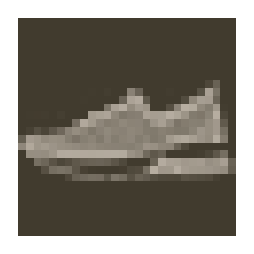
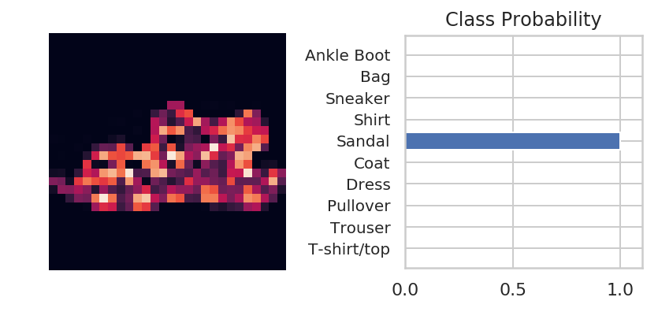

Part 4 - Classifying Fashion-MNIST
Table of Contents
Introduction
This is from Udacity's Deep Learning Repository which supports their Deep Learning Nanodegree.
This post uses the Fashion-MNIST dataset, a set of article images from Zalando, a fashion retailer. It is meant to be a drop-in replacement for the MNIST dataset. The dataset was created because some people the consider original MNIST too easy, with classical machine learning algorithms achieving better than 97% accuracy. The dataset keeps the 10 classes, but now instead of digits they represent clothing types.
| Label | Description |
|---|---|
| 0 | T-shirt/top |
| 1 | Trouser |
| 2 | Pullover |
| 3 | Dress |
| 4 | Coat |
| 5 | Sandal |
| 6 | Shirt |
| 7 | Sneaker |
| 8 | Bag |
| 9 | Ankle boot |
descriptions = ("T-shirt/top",
"Trouser",
"Pullover",
"Dress",
"Coat",
"Sandal",
"Shirt",
"Sneaker",
"Bag",
"Ankle boot",
)
label_decoder = dict(zip(range(10), descriptions))
Set Up
Imports
Python Standard Library
from collections import OrderedDict
PyPi
from torchvision import datasets, transforms
from torch import nn, optim
import seaborn
import torch
import torch.nn.functional as F
The Udacity Code
from nano.pytorch import helper
Plotting
get_ipython().run_line_magic('matplotlib', 'inline')
get_ipython().run_line_magic('config', "InlineBackend.figure_format = 'retina'")
seaborn.set(style="whitegrid",
rc={"axes.grid": False,
"font.family": ["sans-serif"],
"font.sans-serif": ["Latin Modern Sans", "Lato"],
"figure.figsize": (8, 6)},
font_scale=1)
The Data
Normalization
First, a transform to normalize the data.
means = (0.5, 0.5, 0.5)
deviations = means
transform = transforms.Compose([transforms.ToTensor(),
transforms.Normalize(means, deviations)])
Load The Data
First our training set.
training = datasets.FashionMNIST('~/datasets/F_MNIST/',
download=True,
train=True,
transform=transform)
training_batches = torch.utils.data.DataLoader(training,
batch_size=64,
shuffle=True)
Downloading http://fashion-mnist.s3-website.eu-central-1.amazonaws.com/train-images-idx3-ubyte.gz Downloading http://fashion-mnist.s3-website.eu-central-1.amazonaws.com/train-labels-idx1-ubyte.gz Downloading http://fashion-mnist.s3-website.eu-central-1.amazonaws.com/t10k-images-idx3-ubyte.gz Downloading http://fashion-mnist.s3-website.eu-central-1.amazonaws.com/t10k-labels-idx1-ubyte.gz Processing... Done!
Now our test set.
testing = datasets.FashionMNIST('~/datasets/F_MNIST/',
download=True,
train=False,
transform=transform)
test_batches = torch.utils.data.DataLoader(testing,
batch_size=64,
shuffle=True)
The data is apparently on a european amazon web-service server.
Let's take a look at one of the images.
def show_next_image(data_set: torch.utils.data.DataLoader) -> tuple:
"""plots the next image
Args:
data_set: iterator to get the next image from
Returns:
image, label: the next items in the data set
"""
image, label = iter(data_set).next()
helper.imshow(image[0, :])
return image, label
with seaborn.axes_style(style="white", rc={"figure.figsize": (4, 2)}):
image, label = show_next_image(training_batches)

Every time I re-run this the image changes. That was originally just a blob.
print(label_decoder[label[0].item()])
Sneaker
The Network
Here you should define your network. As with MNIST, each image is 28x28 which is a total of 784 pixels, and there are 10 classes. You should include at least one hidden layer. We suggest you use ReLU activations for the layers and to return the logits or log-softmax from the forward pass. It's up to you how many layers you add and the size of those layers.
Hyper Parameters
class HyperParameters:
inputs = 28 * 28
hidden_layer_1 = 128
hidden_layer_2 = 64
outputs = 10
learning_rate = 0.005
rows = 1
epochs = 200
The Model
model = nn.Sequential(
OrderedDict(
input_to_hidden=nn.Linear(HyperParameters.inputs,
HyperParameters.hidden_layer_1),
activation_1=nn.ReLU(),
hidden_to_hidden=nn.Linear(HyperParameters.hidden_layer_1,
HyperParameters.hidden_layer_2),
activation_2=nn.ReLU(),
hidden_to_output=nn.Linear(HyperParameters.hidden_layer_2,
HyperParameters.outputs),
activation_out=nn.LogSoftmax(dim=HyperParameters.rows),
)
)
The Optimizer and Loss
criterion = nn.NLLLoss()
optimizer = optim.SGD(model.parameters(), lr=HyperParameters.learning_rate)
Training
The process:
- Make a forward pass through the network to get the logits
- Use the logits to calculate the loss
- Perform a backward pass through the network with `loss.backward()` to calculate the gradients
- Take a step with the optimizer to update the weights
By adjusting the hyperparameters (hidden units, learning rate, etc), you should be able to get the training loss below 0.4.
for epoch in range(HyperParameters.epochs):
running_loss = 0
for images, labels in training_batches:
# some setup
## Flatten the images
images = images.view(images.shape[0], -1)
## Reset the optimizer
optimizer.zero_grad()
# forward pass
output = model.forward(images)
# back-propagation
loss = criterion(output, labels)
loss.backward()
# take the next step
optimizer.step()
running_loss += loss.item()
if not epoch % 10:
print(f"Training loss: {running_loss/len(data_batches)}")
Training loss: 1.2992842076048414 Training loss: 0.4147487568385057 Training loss: 0.3563503011393903 Training loss: 0.31974349495793963 Training loss: 0.2909906929267495 Training loss: 0.2669587785135836 Training loss: 0.24693025264150298 Training loss: 0.22828677767661334 Training loss: 0.2111341437932525 Training loss: 0.19651830268662368 Training loss: 0.18078892016763498 Training loss: 0.1678272306934984 Training loss: 0.15590339134147427 Training loss: 0.1440456182614509 Training loss: 0.13368237831159188 Training loss: 0.1232291767592115 Training loss: 0.11354898248336462 Training loss: 0.104927517529299 Training loss: 0.09589472461912806 Training loss: 0.08939716171846589
Check out a prediction.
images, labels = iter(test_batches).next()
image, label = images[0], labels[0]
# Convert 2D image to 1D vector
image = image.resize_(1, 784)
with torch.no_grad():
logits = model(image)
probabilities = F.softmax(logits, dim=1)
with seaborn.axes_style(style="whitegrid"):
helper.view_classify(image.resize_(1, 28, 28), probabilities,
version='Fashion')

That looks pretty good to me.
print(label_decoder[label.item()])
print(label_decoder[probabilities.argmax().item()])
Sandal Sandal
So this time we got it right.
for index, label in enumerate(labels):
if label.item() == 4:
break
print(index)
image = images[index].resize_(1, 784)
output = model(image)
probabilities = F.softmax(output, dim=1)
print(label_decoder[probabilities.argmax().item()])
print(label_decoder[label.item()])
10 Dress Coat
Oops, look like we're still having problems.
correct = 0
total = 0
with torch.no_grad():
for images, labels in test_batches:
images = images.view(images.shape[0], -1)
outputs = model(images)
_, predicted = torch.max(outputs.data, 1)
total += labels.size(0)
correct += (predicted == labels).sum().item()
print('Accuracy of the network on the test images: %d %%' % (
100 * correct / total))
Accuracy of the network on the test images: 88 %
Not bad, it could probably be tuned to do better, the loss hasn't stopped reducing, for instance, so maybe more epochs would help.
class_correct = list(0. for i in range(10))
class_total = list(0. for i in range(10))
print("|Item|Accuracy (%)|")
print("|-+-|")
with torch.no_grad():
for images, labels in test_batches:
images = images.view(images.shape[0], -1)
outputs = model(images)
_, predicted = torch.max(outputs, 1)
c = (predicted == labels).squeeze()
for i in range(len(labels)):
label = labels[i]
class_correct[label.item()] += c[i].item()
class_total[label.item()] += 1
for i in range(10):
print('|{}|{:.1f}'.format(
label_decoder[i], 100 * class_correct[i] / class_total[i]))
| Item | Accuracy (%) |
|---|---|
| T-shirt/top | 88.0 |
| Trouser | 97.5 |
| Pullover | 87.2 |
| Dress | 88.0 |
| Coat | 83.2 |
| Sandal | 97.4 |
| Shirt | 57.3 |
| Sneaker | 95.5 |
| Bag | 95.7 |
| Ankle boot | 95.6 |
Generally it seems to do okay, but the shirt seems to have gotten worse than when I was using fewer epochs. I might be overfitting by putting so many epochs and if I were to improve it I would probably work on other hyper-parameters.